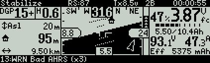

[copywiki destination=”plane,copter,rover,blimp”]¶
FRSky RC Systems¶
FrSky Taranis X9D Plus, QX7, and X-Lite RC Transmitters¶
Tip
These transmitters are highly recommended for all RC uses.
{kind=link}
Taranis X-Lite¶
{kind=link}
Taranis QX7¶
{kind=link}
Taranis X9D Plus¶
Note
Theses transmitters are feature packed for their price. You can buy them from different locations e.g. Craft and Theory, Aloft Hobbies .
The FrSky Taranis RC Transmitter is a high quality OpenTX (open source firmware) enabled RC Transmitter that is compatible with a wide variety of high quality FrSky PPM-Sum and S.Bus compatible receivers.
One of the major advantages of the Taranis is that it can receive and display telemetry data directly from ArduPilot and on-board FrSky telemetry sensors, such as flight mode, GPS status, current drawn and cell voltages, and even ArduPilot messages, that can be added to your vehicle. For more information, see FrSky telemetry.
The Taranis transmitters have integrated ACCST 2.4GHz transmitters that are compatible with X series FrSky receivers such as the very popular X8R or the newer and lighter XSR receivers. This means that an additional JR type transmitter module is not required. If needed, both the Taranis X9D Plus and the Taranis QX7 have JR module bays for external radio transmitters.
Advantages of the FrSky systems:
2.4GHz ACCST frequency hopping radio transmitter with range that is sufficient for most VLOS applications
Quad Ball Bearing Gimbals
Audio Speech Outputs (values, alarms, settings, etc.)
Vibration Alerts
Receiver Signal Strength Indicator (RSSI) Alerts
Open source firmware OpenTx, and a significant user base
Flash via USB
High visibility LCD screen
Reliable and low latency telemetry with matched FrSky receiver
Removable MicroSD card to store sounds, voices, models and custom scripts
The Taranis transmitters can run the Yappu Telemetry
{kind=link}
or FlightDeck telemetry user interface.
FrSky D/X/R Receivers¶
FrSky has many compatible receivers. Some ouput PPM, some SBus. Almost all offer telemetry in some form. Any receiver with S.Port offers bi-directional telemetry. For more information about FrSky receiver telemetry, refer to the FrSky telemetry page.
{kind=link}
FrSky X8R receiver¶
FrSky Transmitter Module¶
FrSky makes modules for transmitters with JR style auxiliary RF module bays. This allows you to use FrSky receivers and telemetry with Turnigy 9 series, JR, and other transmitters.